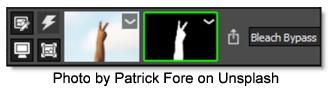
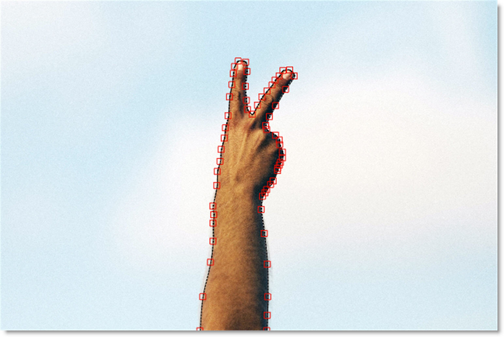

Applying a Path Mask to a Layer
A Path is an outline created by placing sequential points along an object. Think of it as connecting the dots if you will. Although paths can be open or closed, Optics only makes use of closed paths. Drawing a path is often a good solution for objects that can’t be masked in any other way.
1 Select a filter and preset that changes the image in an obvious way.
2 Click the Add Mask icon in the Layers window and choose Path.
Once Path is selected, the effect of the filter in the Viewer can no longer be seen until a mask is created.
3 Click repeatedly in the Viewer to create a new shape.
4 When done, click on the first point that was added to close the path.
The filter now appears only in the area contained within the path. To change the shape of the path, move the controls points.
5 Click on one point to select it or click and drag a box around a group of points.
6 Click and drag on one of the selected points to move them.
If needed, you can add new points by Alt+clicking on the path between two points. Points are deleted by selecting them and hitting the Delete key.
7 Create as many paths as you’d like.
When paths overlap, a hole in the mask occurs.
See Path Mask for more information.